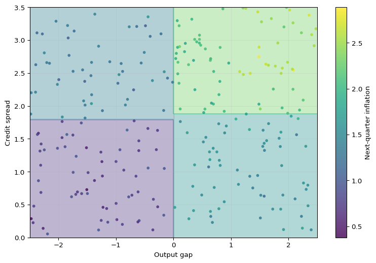
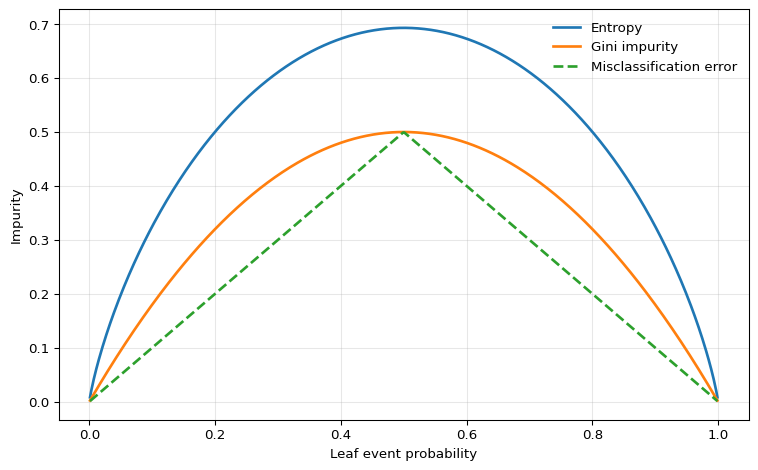

Under active development. A stable version is expected in November 2026. Feedback is very welcome.
10 Decision Trees
10.1 Overview
Decision trees are nonparametric estimators that approximate an unknown conditional mean or conditional event probability by repeatedly splitting the predictor space and assigning a constant prediction within each resulting region. For econometricians, they are useful when thresholds, interactions, and regime changes matter but are hard to specify in advance. A tree can learn rules such as “if the output gap is negative and credit spreads are high, predict lower GDP growth” without the researcher having to write down all interactions beforehand.
Single trees are attractive because they are interpretable, but that interpretability comes with important weaknesses. Trees are discontinuous, unstable, and unable to extrapolate outside the support of the training data. Those weaknesses are the reason why later chapters move from single trees to random forests and boosting.
10.2 Roadmap
- We start with regression trees and show how they approximate the conditional mean by partitioning the predictor space into leaves.
- We then explain recursive binary splitting, the greedy algorithm used to construct a tree.
- Next we turn to classification trees, impurity measures, and the interpretation of leaf predictions as event probabilities.
- We then discuss overfitting, stopping rules, and cost-complexity pruning.
- Finally, we summarize when trees are useful for econometric work and where they fail.
10.3 Regression Trees
Suppose we observe a training sample \(\{(x_i, y_i)\}_{i=1}^n\) with \(x_i \in \mathbb{R}^p\) and scalar response \(y_i\). A regression tree with \(J\) leaves predicts
\[ \hat f(x) = \sum_{j=1}^J \hat w_j \mathbf{1}\{x \in R_j\}, \]
where the leaves \(R_1, \ldots, R_J\) form a partition of the predictor space.
Definition: Regression Tree
A regression tree is a piecewise-constant estimator of the conditional mean function. Each leaf \(R_j\) corresponds to a region of the predictor space, and all observations in that region receive the same prediction \(\hat w_j\).
Leaf Predictions Under Squared Loss
If the regions \(R_1,\ldots,R_J\) were fixed, the optimal leaf value in region \(R_j\) solves
\[ \hat w_j = \arg\min_w \sum_{i:x_i \in R_j} (y_i - w)^2. \]
Taking the derivative with respect to \(w\) gives
\[ -2\sum_{i:x_i \in R_j}(y_i - w) = 0 \quad \Longrightarrow \quad \hat w_j = \frac{1}{N_j}\sum_{i:x_i \in R_j} y_i, \]
where \(N_j = \sum_{i=1}^n \mathbf{1}\{x_i \in R_j\}\) is the number of observations in leaf \(j\).
So once the partition is chosen, the fitted value in each leaf is just the sample mean of the responses in that leaf. The real problem is therefore choosing the partition.
Econometric Interpretation
A regression tree is a data-driven threshold model. Each split creates a regime such as output_gap <= 0.5 or credit_spread > 1.8, and the fitted value in that regime is a local average. In that sense, trees behave like automatically selected interacted dummy regressions with unknown thresholds.
Recursive Binary Splitting
In principle we would like to choose regions \(R_1,\ldots,R_J\) to minimize the residual sum of squares
\[ \text{RSS}(R_1,\ldots,R_J) = \sum_{j=1}^J \sum_{i:x_i \in R_j} (y_i - \bar y_{R_j})^2, \]
where \(\bar y_{R_j}\) is the sample mean within region \(R_j\).
Unlike a neural network, this objective is not optimized by differentiating a smooth parameter vector. The regions \(R_j\) change discretely when a split threshold moves past an observation, and the indicator \(1(x \in R_j)\) is not differentiable. Trees are therefore grown by searching over candidate splits rather than trained by gradient descent.
A global search over all possible partitions is computationally infeasible. Decision trees therefore restrict attention to binary, axis-aligned splits. At a given node containing observations \(I_m\), the algorithm considers splits of the form
\[ x_{ij} \leq s \qquad \text{versus} \qquad x_{ij} > s, \]
for feature \(j \in \{1,\ldots,p\}\) and threshold \(s\). Define the left and right child nodes by
\[ I_m^L(j,s) = \{i \in I_m : x_{ij} \leq s\}, \qquad I_m^R(j,s) = \{i \in I_m : x_{ij} > s\}. \]
The split criterion is
\[ Q_m(j,s) = \sum_{i \in I_m^L(j,s)} (y_i - \bar y_m^L)^2 + \sum_{i \in I_m^R(j,s)} (y_i - \bar y_m^R)^2, \]
and the algorithm chooses the pair \((j,s)\) that minimizes \(Q_m(j,s)\).
Why only midpoints matter
For a continuous predictor, candidate cutoffs only need to be checked at midpoints between consecutive ordered sample values. Between two adjacent observations, the membership of the left and right child nodes does not change, so the objective is constant.
After the best split is chosen, the same procedure is applied within each child node. This top-down greedy algorithm is called recursive binary splitting. It is computationally feasible, but it only guarantees a local optimum, not the globally best tree.
The figure highlights the central feature of a regression tree: the fitted function is piecewise constant. This can be useful when the underlying relationship contains genuine threshold effects, but it also means that a tree does not produce smooth marginal effects.
Axis-Aligned Partitions
With more than one predictor, recursive binary splitting produces rectangles in two dimensions and hyperrectangles in higher dimensions. Each additional split refines one existing region along a single coordinate.

This geometry makes trees easy to interpret, but it also reveals a limitation: a single split can only move along one variable at a time. If the true decision boundary is smooth or diagonal, a small tree may approximate it poorly.
Question for Reflection
Based on the tree geometry above, when is a tree split more credible than a smooth marginal effect, and when is the step-function approximation a limitation?
Suggested Answer
A threshold rule is plausible when institutions create discontinuities, such as tax brackets, credit-score cutoffs, covenant violations, eligibility rules, or regulatory capital thresholds. A smooth marginal effect is more plausible for relationships such as income and consumption, interest rates and investment, or experience and wages, where small changes in the regressor should usually imply small changes in the conditional mean. A tree can approximate smooth effects, but it does so with step functions.
10.4 Classification Trees
Now suppose \(y_i \in \{0,1\}\) indicates an event such as recession, default, or policy intervention. A classification tree still partitions the predictor space into leaves, but the natural quantity inside each leaf is now the empirical event probability
\[ \hat p_j = \frac{1}{N_j}\sum_{i:x_i \in R_j} y_i. \]
This is the estimated conditional probability of the event for observations landing in leaf \(R_j\). It is also the Bernoulli maximum-likelihood estimator within that leaf.
Probabilities First, Decisions Second
A classification tree does three conceptually distinct things:
- It estimates a leaf probability \(\hat p_j\).
- It converts that probability into a class label only after a decision threshold is chosen.
- The default threshold of 0.5 is optimal only under symmetric classification losses.
For econometric work, the probability forecast is often the main object of interest.
Impurity Measures
To grow a classification tree, we need a criterion that measures how mixed the classes are inside a node. For a node with positive-class share \(\hat p\), two standard impurity measures are:
- Entropy \[ H(\hat p) = -\hat p \log \hat p - (1-\hat p)\log(1-\hat p) \]
- Gini impurity \[ G(\hat p) = 2\hat p(1-\hat p) \]
Both are zero for pure nodes with \(\hat p \in \{0,1\}\) and are maximized at \(\hat p = 1/2\).
For a candidate split of node \(m\), the weighted impurity is
\[ I_m(j,s) = \frac{N_m^L}{N_m} I(\hat p_m^L) + \frac{N_m^R}{N_m} I(\hat p_m^R), \]
where \(I\) is either entropy or Gini. The preferred split is the one that minimizes this weighted child impurity, or equivalently maximizes impurity reduction.
Because entropy is the Bernoulli entropy from the Information Theory chapter, the impurity reduction under entropy is exactly an information gain calculation.

One could also use misclassification error, \(\min\{\hat p, 1-\hat p\}\), but it is flatter around the center and therefore less sensitive to changes in node composition. For that reason, entropy or Gini are more common for actually growing the tree.
Entropy vs Gini
In practice, entropy and Gini usually lead to very similar trees. Gini is slightly simpler algebraically and is the default in many software packages. Entropy is often more convenient in teaching because it links directly to information theory.
Leaf Probabilities and Class Predictions
Once the tree has been grown, prediction is straightforward:
- For a probability forecast, report the leaf average \(\hat p_j\).
- For a class prediction, compare \(\hat p_j\) with a decision threshold \(c\).
Under symmetric 0-1 loss, the threshold is \(c=0.5\). Under asymmetric losses, the threshold changes. If a false negative costs \(C_{FN}\) and a false positive costs \(C_{FP}\), then predicting class 1 is optimal whenever
\[ \hat p_j > \frac{C_{FP}}{C_{FP} + C_{FN}}. \]
This matters in economics and finance because missed recessions, missed defaults, and false alarms rarely have the same cost.
10.5 Tree Size, Overfitting, and Pruning
A fully grown tree can drive training error very low by creating many tiny leaves. That flexibility is dangerous: the resulting estimator often has low bias but very high variance.
Bias-Variance View
For a fixed forecast point \(x_0\), the expected test error can be decomposed schematically as
\[ \mathbb{E}\left[(Y_0-\hat f(x_0))^2\right] = \operatorname{Var}\left(\hat f(x_0)\right) +\operatorname{Bias}\left(\hat f(x_0)\right)^2 +\operatorname{Var}(\varepsilon_0). \]
Deep trees can reduce approximation bias because they create many small regions, but they are highly sensitive to the training sample. In the terminology of the decomposition, unrestricted trees often have low bias but high variance.
There are two common ways to control complexity.
Pre-pruning
The first approach is to stop the tree from growing too far in the first place. Common controls include:
max_depth: maximum number of split levelsmin_samples_leaf: minimum number of observations allowed in a leafmin_samples_split: minimum number of observations required before a node may be splitmax_leaf_nodes: direct cap on the number of terminal leaves
These hyperparameters trade bias against variance. A shallow tree may miss important nonlinearities. A deep tree may fit noise and become unstable.
Cost-Complexity Pruning
The second approach is to first grow a large tree and then prune it back. A standard criterion is the cost-complexity objective
\[ C_\alpha(T) = \sum_{i=1}^n (y_i - \hat f_T(x_i))^2 + \alpha |T|, \]
where \(|T|\) is the number of leaves in tree \(T\) and \(\alpha \geq 0\) is a tuning parameter.
Larger \(\alpha\) penalizes bigger trees more heavily, so the selected tree becomes smaller. This is directly analogous to complexity penalization in econometrics: we do not accept an extra parameter, or here an extra leaf, unless it reduces the in-sample fit criterion enough to justify the added flexibility.
Econometric Warning
For macroeconomic or financial time series, tree depth and pruning parameters must be tuned with an honest time-aware validation scheme. Randomly shuffled folds can leak future information and make a tree appear much more accurate than it would be in real time. The correct benchmark is the actual information set available at the forecast origin.
Why Single Trees Are Unstable
A single split near the top of the tree changes the sample available to all later splits. As a result, small perturbations in the training data can generate a different sequence of splits and therefore a very different fitted function. This high variance is the main reason single trees are rarely the final predictive model in serious applications.
Link to the Next Chapters
Random forests attack the variance problem by averaging many trees. Boosting attacks bias by adding trees sequentially to correct earlier mistakes. Both methods keep the partitioning logic of trees while improving predictive performance.
10.6 Trees for Econometric Data: Strengths and Limits
Decision trees are useful when the relationship between predictors and outcomes is plausibly nonlinear and interaction-heavy. Typical examples include:
- default prediction from balance-sheet ratios
- recession prediction from financial indicators
- household demand or credit response with threshold effects
- heterogeneous policy targeting when prediction is the goal
Small trees are also attractive when communication matters, because the fitted rule can be read as a sequence of if-then statements.
But trees also have sharp limitations.
Strengths
- They automatically discover interactions and threshold effects.
- They require little preprocessing and are not sensitive to variable scaling.
- They can handle many predictors without manually writing basis expansions or interaction terms.
- Small trees can be interpreted as explicit decision rules.
Limitations
- They produce discontinuous predictions.
- They cannot extrapolate trends outside the support of the training data.
- They are unstable: small sample changes can produce different trees.
- A single tree is usually not competitive with modern ensemble methods in pure predictive accuracy.
- Split variables and thresholds are chosen adaptively for prediction, so they should not be given a causal interpretation.
For time-series econometrics, the extrapolation issue is especially important. If GDP growth, inflation, or asset volatility moves outside the historical range seen during training, a tree can only return the constant prediction from the outermost leaf. That is often too rigid for forecasting.
10.7 Summary
Key Takeaways
- A decision tree is a piecewise-constant estimator of the conditional mean or conditional event probability obtained by partitioning the predictor space into leaves.
- In regression trees, each leaf prediction is the sample mean inside the leaf and splits are chosen to reduce residual sum of squares.
- In classification trees, leaves carry estimated event probabilities and splits are chosen using impurity measures such as entropy or Gini.
- Tree fitting is greedy, so unrestricted trees can overfit badly; depth restrictions, minimum leaf sizes, and pruning are essential complexity controls.
- Trees are valuable for threshold effects and interactions, but single trees are unstable, discontinuous, and unable to extrapolate beyond the observed support.
Common Pitfalls
- Treating a leaf prediction as a local slope or marginal effect. Trees estimate local averages, not derivatives.
- Reading a split as causal evidence. Splits are selected adaptively for prediction, not for identification.
- Using a 0.5 classification threshold even when false positives and false negatives have different costs.
- Expecting a tree to extrapolate a time trend or smooth relationship outside the training sample.
- Tuning tree depth with randomly shuffled cross-validation in a dependent-data setting.
10.8 Exercises
Exercise 10.1: One-Split Regression Tree and Pruning
Consider the following training sample with one predictor \(x\) and response \(y\):
| Observation | \(x\) | \(y\) |
|---|---|---|
| 1 | 1 | 2.0 |
| 2 | 2 | 3.0 |
| 3 | 3 | 2.5 |
| 4 | 4 | 5.0 |
- Compute the root-node mean and the root-node sum of squared errors.
- Evaluate the candidate one-split regression trees with cutoffs \(s \in \{1.5, 2.5, 3.5\}\). For each split, compute the leaf means and the total sum of squared errors. Which split is chosen by recursive binary splitting?
- Consider the cost-complexity objective \[ C_\alpha(T) = \sum_{i=1}^4 (y_i - \hat f_T(x_i))^2 + \alpha |T|, \] where \(|T|\) is the number of leaves. For which values of \(\alpha\) is the one-split tree from Part 2 preferred to the stump with no split?
- Give the tree’s prediction at \(x=2.7\) and at \(x=5\). What limitation of regression trees does this illustrate for forecasting trending macroeconomic variables?
Exam level: suitable as-is. Parts 1-3 test the mechanics of tree fitting and pruning, while Part 4 checks understanding of extrapolation.
Hint for Part 1
The stump predicts the full-sample mean. Then compute the root-node sum of squared errors by summing squared deviations from that mean.
Hint for Part 2
For each candidate split:
- Identify the left and right leaves.
- Compute the mean response in each leaf.
- Add the two within-leaf sums of squared errors.
The preferred split is the one with the smallest total.
Hint for Part 3
The stump has one leaf. The split tree has two leaves. Write the two penalized criteria explicitly and compare them.
Hint for Part 4
A tree predicts a constant inside each leaf. Ask what happens once \(x\) moves beyond the largest observed value in the training sample.
Solution
Part 1: Root node
The root-node mean is
\[ \bar y = \frac{2 + 3 + 2.5 + 5}{4} = 3.125. \]
So the stump SSE is
\[ (2 - 3.125)^2 + (3 - 3.125)^2 + (2.5 - 3.125)^2 + (5 - 3.125)^2 = 5.1875. \]
Part 2: Candidate splits
For \(s=1.5\):
- Left leaf: \(\{2\}\) with mean \(2\)
- Right leaf: \(\{3, 2.5, 5\}\) with mean \(3.5\)
Hence
\[ \text{SSE}(1.5) = 0 + (3-3.5)^2 + (2.5-3.5)^2 + (5-3.5)^2 = 3.5. \]
For \(s=2.5\):
- Left leaf: \(\{2, 3\}\) with mean \(2.5\)
- Right leaf: \(\{2.5, 5\}\) with mean \(3.75\)
Hence
\[ \text{SSE}(2.5) = (2-2.5)^2 + (3-2.5)^2 + (2.5-3.75)^2 + (5-3.75)^2 = 3.625. \]
For \(s=3.5\):
- Left leaf: \(\{2, 3, 2.5\}\) with mean \(2.5\)
- Right leaf: \(\{5\}\) with mean \(5\)
Hence
\[ \text{SSE}(3.5) = (2-2.5)^2 + (3-2.5)^2 + (2.5-2.5)^2 + (5-5)^2 = 0.5. \]
Therefore the best one-split tree uses the cutoff \(s=3.5\).
Part 3: Cost-complexity comparison
The stump has one leaf, so its criterion is
\[ C_\alpha(\text{stump}) = 5.1875 + \alpha. \]
The one-split tree has two leaves and SSE \(0.5\), so
\[ C_\alpha(\text{split}) = 0.5 + 2\alpha. \]
The split tree is preferred when
\[ 0.5 + 2\alpha < 5.1875 + \alpha \quad \Longleftrightarrow \quad \alpha < 4.6875. \]
So the split tree is chosen for \(\alpha < 4.6875\), the stump is chosen for \(\alpha > 4.6875\), and the two are tied at \(\alpha = 4.6875\).
Part 4: Predictions and extrapolation
Because the chosen split is at \(x=3.5\),
\[ \hat f(x)= \begin{cases} 2.5, & x \leq 3.5, \\ 5, & x > 3.5. \end{cases} \]
So
\[ \hat f(2.7) = 2.5, \qquad \hat f(5) = 5. \]
This illustrates the extrapolation problem: once \(x\) is above the largest cutoff, the tree cannot continue an upward trend. It simply returns the constant prediction from the outermost leaf.
Exercise 10.2: Classification Trees, Impurity, and Decision Thresholds
A bank uses a single predictor \(x\) (the debt-to-equity ratio) to predict firm default, where \(y=1\) denotes default and \(y=0\) denotes no default.
| Firm | \(x\) | \(y\) |
|---|---|---|
| 1 | 0.5 | 0 |
| 2 | 1.2 | 0 |
| 3 | 1.8 | 1 |
| 4 | 2.5 | 0 |
| 5 | 3.0 | 1 |
| 6 | 3.5 | 1 |
- Compute the root-node entropy and root-node Gini impurity.
- For the candidate split at \(x=2.15\), compute the weighted child entropy and weighted child Gini impurity.
- Repeat Part 2 for the candidate split at \(x=1.5\). Which split is preferred under entropy? Which is preferred under Gini?
- For the preferred split, report the default probability in each leaf and the implied class prediction under a 0.5 threshold.
- Suppose the cost of a false negative is \(C_{FN}\) and the cost of a false positive is \(C_{FP}\). Show that predicting default is optimal when \[ \hat p > \frac{C_{FP}}{C_{FP}+C_{FN}}. \] What threshold results when \(C_{FN}=4\) and \(C_{FP}=1\)?
Exam level: suitable as-is if numerical logs are provided or students may leave entropy answers in exact logarithmic form.
Hint for Part 1
The full sample has three defaults out of six firms, so the event frequency is \(\hat p = 1/2\).
Hint for Part 2
The split at \(x=2.15\) places firms 1-3 on the left and firms 4-6 on the right. Compute the default share in each child, then take the weighted average of the child impurities.
Hint for Part 3
The split at \(x=1.5\) creates a pure left leaf. That should immediately suggest a larger impurity reduction.
Hint for Part 5
Compare the expected loss from predicting class 1 with the expected loss from predicting class 0 when the leaf event probability is \(\hat p\).
Solution
Part 1: Root impurity
The root node has default share
\[ \hat p = \frac{3}{6} = \frac{1}{2}. \]
Hence the root entropy is
\[ H\left(\frac{1}{2}\right) = -\frac{1}{2}\log\left(\frac{1}{2}\right) - \frac{1}{2}\log\left(\frac{1}{2}\right) = \log 2 \approx 0.693. \]
The root Gini impurity is
\[ G\left(\frac{1}{2}\right) = 2 \cdot \frac{1}{2} \cdot \frac{1}{2} = 0.5. \]
Part 2: Split at \(x=2.15\)
Left leaf: firms 1, 2, 3 with labels \((0,0,1)\), so \(\hat p_L = 1/3\).
Right leaf: firms 4, 5, 6 with labels \((0,1,1)\), so \(\hat p_R = 2/3\).
Entropy in each child is the same:
\[ H\left(\frac{1}{3}\right) = -\frac{1}{3}\log\left(\frac{1}{3}\right) - \frac{2}{3}\log\left(\frac{2}{3}\right) \approx 0.637. \]
Therefore the weighted child entropy is
\[ \frac{3}{6} \cdot 0.637 + \frac{3}{6} \cdot 0.637 = 0.637. \]
The child Gini impurity is also the same in both leaves:
\[ G\left(\frac{1}{3}\right) = 2 \cdot \frac{1}{3} \cdot \frac{2}{3} = \frac{4}{9} \approx 0.444. \]
So the weighted child Gini impurity is
\[ \frac{3}{6}\cdot \frac{4}{9} + \frac{3}{6}\cdot \frac{4}{9} = \frac{4}{9} \approx 0.444. \]
Part 3: Split at \(x=1.5\)
Left leaf: firms 1 and 2 with labels \((0,0)\), so \(\hat p_L = 0\).
Right leaf: firms 3, 4, 5, 6 with labels \((1,0,1,1)\), so \(\hat p_R = 3/4\).
Left-leaf entropy is \(H(0)=0\), and right-leaf entropy is
\[ H\left(\frac{3}{4}\right) = -\frac{3}{4}\log\left(\frac{3}{4}\right) - \frac{1}{4}\log\left(\frac{1}{4}\right) \approx 0.562. \]
Hence the weighted child entropy is
\[ \frac{2}{6}\cdot 0 + \frac{4}{6}\cdot 0.562 \approx 0.375. \]
Left-leaf Gini is \(G(0)=0\), and right-leaf Gini is
\[ G\left(\frac{3}{4}\right) = 2 \cdot \frac{3}{4}\cdot \frac{1}{4} = \frac{3}{8} = 0.375. \]
Hence the weighted child Gini impurity is
\[ \frac{2}{6}\cdot 0 + \frac{4}{6}\cdot 0.375 = 0.25. \]
So the split at \(x=1.5\) is preferred under both entropy and Gini because it produces the lower weighted child impurity.
Part 4: Leaf probabilities and class predictions
For the preferred split at \(x=1.5\):
- Left leaf default probability: \(\hat p_L = 0\)
- Right leaf default probability: \(\hat p_R = 3/4\)
Under a 0.5 threshold, the implied classifier is:
- predict no default on the left leaf
- predict default on the right leaf
Part 5: Asymmetric decision threshold
If we predict default, the only mistake is a false positive, which occurs with probability \(1-\hat p\). The expected loss is therefore
\[ L(1) = C_{FP}(1-\hat p). \]
If we predict no default, the only mistake is a false negative, which occurs with probability \(\hat p\). The expected loss is
\[ L(0) = C_{FN}\hat p. \]
Predicting default is optimal when \(L(1) < L(0)\):
\[ C_{FP}(1-\hat p) < C_{FN}\hat p. \]
Rearranging gives
\[ C_{FP} < \hat p(C_{FP}+C_{FN}) \quad \Longleftrightarrow \quad \hat p > \frac{C_{FP}}{C_{FP}+C_{FN}}. \]
If \(C_{FN}=4\) and \(C_{FP}=1\), the optimal threshold is
\[ \frac{1}{1+4} = 0.2. \]
So with asymmetric losses, a bank should classify a firm as default whenever the estimated default probability exceeds \(0.2\), not \(0.5\).
11 Random Forests
11.1 Overview
Random forests solve the main weakness of single decision trees: high variance. A single tree can change sharply when the sample changes slightly, especially when early splits are unstable. Random forests reduce this instability by averaging many trees grown on perturbed versions of the data and by injecting additional randomness into the split search.
For econometricians, random forests are attractive when prediction is the goal and the conditional mean or event probability may depend on complicated nonlinearities and interactions. They work especially well on tabular data such as firm-level balance-sheet variables, household characteristics, or macro-financial predictors. At the same time, they remain nonparametric prediction tools rather than structural models: they do not extrapolate well, and their split structure should not be read causally.
11.2 Roadmap
- We begin with bagging and show why averaging unstable trees can reduce variance substantially.
- We then explain the additional random-feature step that turns bagging into a random forest.
- Next we study bootstrap sampling, out-of-bag evaluation, and the forest-as-weights interpretation.
- We then discuss the main hyperparameters and the bias-variance trade-offs they control.
- Finally, we summarize where random forests fit well in econometric work and where caution is needed.
11.3 From Bagging to Random Forests
Suppose we have a predictor \(\hat T(x)\) produced by a deep regression tree. If we grow many such trees on slightly different datasets and average them, we obtain the bagged predictor
\[ \hat f_B(x) = \frac{1}{B}\sum_{b=1}^B \hat T_b(x), \]
where \(\hat T_b(x)\) is the prediction of tree \(b\) and \(B\) is the number of trees.
Bagging stands for bootstrap aggregating:
- draw a bootstrap sample from the training data
- grow a tree on that sample
- repeat many times
- average the resulting predictions in regression, or average probabilities / vote in classification
The usual bagging version draws each bootstrap sample with replacement and with the same size as the original sample. A related variant, often called subagging, draws subsamples of size \(L<n\), usually without replacement. Both approaches create many perturbed training sets; the random forest then applies equal weights \(1/B\) to the resulting tree predictions.
The idea only works well when the base learner is unstable. Deep trees are exactly such learners: small changes in the sample can alter the early splits and therefore the whole fitted function. This high variance is a weakness for a single tree but an opportunity for averaging.
Variance of an Averaged Forest
Suppose the trees at a fixed point \(x\) satisfy
\[ \mathbb{V}[\hat T_b(x)] = \sigma^2(x), \qquad \text{Corr}(\hat T_b(x), \hat T_{b'}(x)) = \rho(x) \quad \text{for } b \neq b'. \]
Then the variance of the forest average is
\[ \mathbb{V}[\hat f_B(x)] = \sigma^2(x)\left[\rho(x) + \frac{1-\rho(x)}{B}\right]. \]
This shows two things:
- Averaging many trees reduces variance.
- The correlation \(\rho(x)\) between trees sets a lower bound on how much variance reduction is possible.
So a successful forest needs not just many trees, but also sufficiently different trees.
Why Bagging Alone Is Not Enough
If some predictors are very strong, then many bootstrap trees will keep splitting on the same variables near the root. That makes the trees highly correlated. Bagging alone therefore leaves too much common variation across trees.
Random forests address this directly. At each split, instead of considering all \(p\) predictors, the algorithm draws a random subset of size \(m\) and searches only within that subset. The best split among those \(m\) predictors is used.
This does two things at once:
- it lowers the correlation across trees by forcing them to try different split variables
- it may slightly weaken each individual tree because the globally best predictor is not always available
Random forests work because this correlation reduction usually dominates the loss in individual tree strength.
11.4 The Random-Forest Predictor
For regression, the random-forest predictor is
\[ \hat f_B(x) = \frac{1}{B}\sum_{b=1}^B \hat T_b(x). \]
For classification, each tree can produce either a class vote or an estimated leaf probability. In econometric applications, the probability forecast is usually more informative than the hard class label. A forest therefore often predicts
\[ \hat p_B(x) = \frac{1}{B}\sum_{b=1}^B \hat p_b(x), \]
where \(\hat p_b(x)\) is the event probability from tree \(b\).
This makes random forests natural competitors for problems such as:
- default prediction
- recession probability forecasting
- treatment assignment risk scoring
- nonlinear forecasting of inflation, output, or firm sales
11.5 Forest Weights and Distributional Outlook
A random forest can also be viewed as a data-adaptive local averaging estimator. Let \(L_b(x)\) denote the terminal leaf containing the forecast point \(x\) in tree \(b\), and let \(N_b(x)\) be the number of training observations in that leaf. The regression prediction can be written as
\[ \hat f_B(x) = \sum_{i=1}^n w_i(x)y_i, \qquad w_i(x) = \frac{1}{B}\sum_{b=1}^B \frac{1\{x_i \in L_b(x)\}}{N_b(x)}. \]
The weight \(w_i(x)\) is large when observation \(i\) often lands in the same terminal leaf as the forecast point. This is the forest analogue of a kernel estimator: the forest defines the neighborhood through its tree partitions rather than through a fixed distance metric.
This weighting view is also the bridge to more advanced forests. Quantile and distributional forests keep more than the leaf mean and use the same neighborhood weights to estimate a conditional distribution. Local-linear forests go in a different direction: they retain the forest neighborhood but fit a local linear model rather than a constant inside the neighborhood. Section 13.5 develops the distributional version.
#| label: fig-tree-vs-forest
#| fig-cap: "A random forest smooths the unstable fit of a single deep tree while retaining nonlinear threshold-like behavior."
#| echo: false
import numpy as np
import matplotlib.pyplot as plt
from sklearn.tree import DecisionTreeRegressor
from sklearn.ensemble import RandomForestRegressor
rng = np.random.default_rng(123)
x = np.sort(rng.uniform(-3, 3, 180))
y = np.sin(1.4 * x) + 0.25 * x + rng.normal(scale=0.35, size=x.shape[0])
tree = DecisionTreeRegressor(max_depth=None, min_samples_leaf=3, random_state=123)
forest = RandomForestRegressor(
n_estimators=300,
min_samples_leaf=3,
max_features=1,
random_state=123,
)
tree.fit(x.reshape(-1, 1), y)
forest.fit(x.reshape(-1, 1), y)
x_grid = np.linspace(-3.1, 3.1, 500)
tree_hat = tree.predict(x_grid.reshape(-1, 1))
forest_hat = forest.predict(x_grid.reshape(-1, 1))
fig, axes = plt.subplots(1, 2, figsize=(12, 4.8), sharey=True)
axes[0].scatter(x, y, s=16, color="0.35", alpha=0.7)
axes[0].plot(x_grid, tree_hat, color="C3", linewidth=2.3)
axes[0].set_title("Single Deep Tree")
axes[0].set_xlabel("Predictor")
axes[0].set_ylabel("Outcome")
axes[0].grid(True, alpha=0.3)
axes[1].scatter(x, y, s=16, color="0.35", alpha=0.7)
axes[1].plot(x_grid, forest_hat, color="C0", linewidth=2.3)
axes[1].set_title("Random Forest")
axes[1].set_xlabel("Predictor")
axes[1].grid(True, alpha=0.3)
plt.tight_layout()
plt.show()The single tree reacts strongly to local sample noise. The forest remains nonlinear, but averaging across many trees stabilizes the fit.
11.6 Bootstrap Sampling and Out-of-Bag Evaluation
Each tree is grown on a bootstrap sample of size \(n\) drawn with replacement from the original sample. Because sampling is with replacement, some observations appear multiple times in a given tree’s training set and some observations are omitted.
For a particular observation \(i\), the probability of being omitted from a bootstrap sample is
\[ \left(1-\frac{1}{n}\right)^n \to e^{-1} \approx 0.368. \]
So roughly 36.8% of the trees leave a given observation out. Those trees form the out-of-bag set for that observation.
Out-of-Bag Predictions
For each observation \(i\), the OOB prediction is the average over trees that did not include \(i\) in their bootstrap sample:
\[ \hat f^{\text{OOB}}(x_i) = \frac{1}{|\mathcal{B}_i^{\text{OOB}}|} \sum_{b \in \mathcal{B}_i^{\text{OOB}}} \hat T_b(x_i). \]
This produces an approximately honest prediction for observation \(i\) because the trees contributing to that prediction were not trained on \(i\).
Under i.i.d. sampling, OOB error often behaves like an internal validation estimate. That is one reason forests are convenient in practice.
OOB Is a Validation Device, Not Magic
Out-of-bag error is useful because it comes “for free” during estimation, but it still reflects the sampling design built into the forest. If the data are serially dependent, clustered, revised over time, or otherwise non-i.i.d., standard OOB error can be misleading.
Question for Reflection
For a panel dataset of firms observed over time, which prediction target is standard OOB error closest to: new firms, new time periods, or new firm-time cells? What validation split would better match each target?
Suggested Answer
Standard OOB error is closest to validating randomly held-out firm-time rows, so it is most defensible for a target resembling new cells drawn from the same panel distribution. It is not a good proxy for predicting entirely new firms or future time periods if there is firm dependence or temporal dependence. New firms call for leave-firm-out validation, future periods call for forward or blocked time splits, and combined targets may require holding out both firms and time blocks.
#| label: fig-oob-convergence
#| fig-cap: "OOB and test MSE typically stabilize as the number of trees grows."
#| echo: false
import numpy as np
import matplotlib.pyplot as plt
from sklearn.ensemble import RandomForestRegressor
rng = np.random.default_rng(321)
n_train = 400
n_test = 400
p = 8
X_train = rng.normal(size=(n_train, p))
X_test = rng.normal(size=(n_test, p))
def signal(X):
return (
1.2 * np.sin(X[:, 0])
+ 0.8 * (X[:, 1] > 0).astype(float)
+ 0.6 * X[:, 2] * X[:, 3]
)
y_train = signal(X_train) + rng.normal(scale=0.5, size=n_train)
y_test = signal(X_test) + rng.normal(scale=0.5, size=n_test)
trees_grid = [10, 25, 50, 100, 200, 400]
oob_mse = []
test_mse = []
for n_trees in trees_grid:
rf = RandomForestRegressor(
n_estimators=n_trees,
max_features=3,
min_samples_leaf=5,
bootstrap=True,
oob_score=True,
random_state=321,
)
rf.fit(X_train, y_train)
oob_mse.append(np.mean((y_train - rf.oob_prediction_) ** 2))
y_pred_test = rf.predict(X_test)
test_mse.append(np.mean((y_test - y_pred_test) ** 2))
fig, ax = plt.subplots(figsize=(8, 5))
ax.plot(trees_grid, oob_mse, "o-", label="OOB MSE", linewidth=2)
ax.plot(trees_grid, test_mse, "o-", label="Test MSE", linewidth=2)
ax.set_xlabel("Number of trees")
ax.set_ylabel("Mean squared error")
ax.grid(True, alpha=0.3)
ax.legend(frameon=False)
plt.tight_layout()
plt.show()The key pattern is not monotone improvement forever, but stabilization. Once enough trees have been added, the forest average has largely converged and additional trees mainly affect computation time.
11.7 Hyperparameters and Trade-Offs
Although forests are often robust, they still require tuning. The most important hyperparameters are the following.
Number of Trees
The number of trees \(B\) mainly controls Monte Carlo error in the forest average.
- More trees lower simulation noise and stabilize predictions.
- More trees do not usually create overfitting in the same way as adding parameters to OLS.
- After a point, gains are negligible and only computation rises.
Number of Candidate Features per Split
This is the parameter often called max_features or mtry.
- Smaller
max_featuresreduces correlation across trees and tends to lower variance. - Larger
max_featuresmakes each tree stronger but more similar to the others. - If one predictor is overwhelmingly strong, reducing
max_featurescan materially improve the ensemble by forcing other variables into the split search.
Common rules of thumb are to try roughly \(p/3\) candidate features per split for regression and roughly \(\sqrt{p}\) for classification. These are not econometric laws; they are starting values that should be checked with a validation design appropriate for the data structure.
Leaf Size and Tree Depth
Random forests often use fairly deep trees, but the leaf size still matters.
- Smaller leaves reduce bias but increase the variance of individual trees.
- Larger leaves smooth the prediction surface and can improve performance when the signal is weak or noisy.
Practical Bias-Variance Summary
The forest design has two levers:
- Make each tree strong.
- Make the trees less correlated.
The best tuning balances those two goals rather than maximizing either one in isolation.
11.8 Econometric Interpretation and Limits
Random forests are particularly useful for prediction with many candidate interactions. They can uncover nonlinear combinations of predictors without the econometrician having to specify them manually. This is often valuable in cross-sectional or panel-style prediction tasks with rich covariate sets.
But several limits remain.
No Extrapolation
Like single trees, forests average leaf values. That means they remain local averaging estimators. If the forecast point lies outside the historical support of the training data, the forest cannot extrapolate a trend; it returns a weighted average of observed outcomes from nearby leaves.
Interpretation Is Predictive, Not Structural
A variable that appears important for a forest is not necessarily a causal driver. The forest is optimized for prediction, not identification.
Standard OOB Evaluation Can Fail for Dependent Data
In macroeconomic and financial forecasting, standard bootstrapping breaks temporal dependence and can leak future information into the effective training sample. In such settings, time-aware validation remains essential.
Econometric Warning
For forecasting problems with serial dependence, publication lags, and real-time data revisions, standard random-forest OOB error is not an honest real-time performance measure. Use rolling or expanding validation windows that replicate the actual information set at the forecast origin.
Variable Importance: Useful but Imperfect
Forests are often accompanied by variable-importance measures. These can be useful screening devices, but they have limitations:
- impurity-based importance can favor variables with many possible split points
- importance does not measure causal effect size
- correlated predictors can split the signal across variables and make each one look less important than it truly is
Permutation importance is often more informative than raw impurity reductions, but even then the interpretation remains predictive rather than structural.
11.9 Summary
Key Takeaways
- A random forest averages many randomized trees and primarily improves on a single tree by reducing variance.
- The variance reduction depends not only on the number of trees, but also on how correlated the individual trees are.
- Random feature selection is crucial because it decorrelates trees that would otherwise keep splitting on the same dominant predictors.
- Out-of-bag predictions provide an internal validation device under i.i.d. sampling, but they are not automatically reliable for dependent time-series data.
- Random forests are powerful nonlinear prediction tools for tabular data, but they remain local averaging estimators and should not be interpreted causally.
Common Pitfalls
- Thinking that more trees always fix a poorly tuned forest. If the trees are highly correlated, averaging has limited payoff.
- Treating OOB error as automatically valid for time-series forecasting.
- Reading variable importance as a causal ranking.
- Expecting a forest to extrapolate outside the support of the training data.
- Setting
max_featuresso high that every tree becomes nearly identical.
11.10 Exercises
Exercise 11.1: Variance Reduction in a Random Forest
Fix a point \(x_0\). Suppose the prediction of tree \(b\) at \(x_0\) is \(T_b\), with
\[ \mathbb{E}[T_b] = \mu, \qquad \mathbb{V}[T_b] = \sigma^2, \]
and for all \(b \neq b'\),
\[ \text{Corr}(T_b,T_{b'}) = \rho. \]
Define the forest predictor as
\[ \bar T_B = \frac{1}{B}\sum_{b=1}^B T_b. \]
- Show that \(\mathbb{E}[\bar T_B] = \mu\).
- Derive the variance formula \[ \mathbb{V}[\bar T_B] = \sigma^2\left[\rho + \frac{1-\rho}{B}\right]. \]
- Let \(\sigma^2 = 9\), \(\rho = 0.2\), and \(B=100\). Compute the variance of a single tree and the variance of the forest. By what percentage is variance reduced?
- What is the limit of \(\mathbb{V}[\bar T_B]\) as \(B \to \infty\)? Explain why this makes
max_featuresimportant in practice.
Exam level: suitable as-is. The exercise combines a nontrivial variance derivation with interpretation of the random-feature mechanism.
Hint for Part 1
Use linearity of expectation.
Hint for Part 2
Start from
\[ \mathbb{V}\left[\frac{1}{B}\sum_{b=1}^B T_b\right] = \frac{1}{B^2}\left( \sum_{b=1}^B \mathbb{V}[T_b] + \sum_{b \neq b'} \text{Cov}(T_b,T_{b'}) \right). \]
Then use \(\text{Cov}(T_b,T_{b'}) = \rho \sigma^2\).
Hint for Part 3
First compute the bracketed term. Then compare with the single-tree variance \(9\).
Solution
Part 1: Expectation
By linearity of expectation,
\[ \mathbb{E}[\bar T_B] = \mathbb{E}\left[\frac{1}{B}\sum_{b=1}^B T_b\right] = \frac{1}{B}\sum_{b=1}^B \mathbb{E}[T_b] = \frac{1}{B}\sum_{b=1}^B \mu = \mu. \]
So averaging does not change the mean prediction.
Part 2: Variance
Using the variance-of-a-sum formula,
\[ \mathbb{V}[\bar T_B] = \frac{1}{B^2} \left( \sum_{b=1}^B \mathbb{V}[T_b] + \sum_{b \neq b'} \text{Cov}(T_b,T_{b'}) \right). \]
There are \(B\) variance terms, each equal to \(\sigma^2\), and \(B(B-1)\) covariance terms, each equal to \(\rho \sigma^2\). Therefore
\[ \mathbb{V}[\bar T_B] = \frac{1}{B^2}\left(B\sigma^2 + B(B-1)\rho \sigma^2\right). \]
Factor out \(\sigma^2\):
\[ \mathbb{V}[\bar T_B] = \sigma^2 \frac{B + B(B-1)\rho}{B^2} = \sigma^2\left(\frac{1}{B} + \frac{B-1}{B}\rho\right). \]
Rewriting gives
\[ \mathbb{V}[\bar T_B] = \sigma^2\left[\rho + \frac{1-\rho}{B}\right]. \]
Part 3: Numerical example
For a single tree,
\[ \mathbb{V}[T_b] = 9. \]
For the forest,
\[ \mathbb{V}[\bar T_{100}] = 9\left[0.2 + \frac{0.8}{100}\right] = 9(0.208) = 1.872. \]
So the variance falls from \(9\) to \(1.872\).
The percentage reduction is
\[ \frac{9 - 1.872}{9} \times 100\% = 79.2\%. \]
Part 4: Infinite-forest limit
As \(B \to \infty\),
\[ \mathbb{V}[\bar T_B] \to \sigma^2 \rho. \]
So averaging can eliminate the idiosyncratic part of tree variance, but not the common correlated part. This is why max_features matters: by forcing different trees to consider different candidate predictors at each split, it lowers \(\rho\) and therefore lowers the asymptotic variance floor of the forest.
Exercise 11.2: Out-of-Bag Predictions and Dependent Data
Suppose a random forest is trained on a sample of size \(n\), and each tree uses a bootstrap sample of size \(n\) drawn with replacement from the original data.
- Show that the probability a fixed observation \(i\) is not selected in one bootstrap sample is \[ \left(1-\frac{1}{n}\right)^n, \] and conclude that this converges to \(e^{-1}\) as \(n \to \infty\).
- A forest uses \(B=500\) trees. Approximately how many trees are expected to leave observation \(i\) out-of-bag?
- Explain why OOB prediction can serve as an internal validation device under i.i.d. sampling.
- You are forecasting quarterly inflation with a long macroeconomic time series. Explain why standard OOB error is not a fully honest evaluation method in this setting, and suggest a more appropriate validation design.
Exam level: suitable as-is. Parts 1-2 are derivational, Part 3 clarifies the OOB logic, and Part 4 tests the key econometric caveat about dependent data.
Hint for Part 1
In one draw, the chance of not selecting observation \(i\) is \(1-1/n\). The bootstrap sample contains \(n\) independent draws with replacement.
Hint for Part 2
Use the approximation from Part 1: the OOB probability is about \(0.368\).
Hint for Part 4
Ask whether a bootstrap resample respects time order, publication lags, and real-time information sets.
Solution
Part 1: OOB probability
In a single bootstrap draw, the probability of not selecting observation \(i\) is
\[ 1 - \frac{1}{n}. \]
Because the bootstrap sample contains \(n\) draws with replacement, the probability that \(i\) is never selected is
\[ \left(1-\frac{1}{n}\right)^n. \]
Using the standard limit,
\[ \left(1-\frac{1}{n}\right)^n \to e^{-1} \approx 0.368 \qquad \text{as } n \to \infty. \]
So roughly 36.8% of trees leave any given observation out.
Part 2: Expected number of OOB trees
If \(B=500\), the expected number of trees for which observation \(i\) is OOB is approximately
\[ 500 \times e^{-1} \approx 500 \times 0.368 = 184. \]
So observation \(i\) receives about 184 OOB predictions on average.
Part 3: Why OOB works under i.i.d. sampling
For observation \(i\), the OOB prediction averages only trees that were not trained on \(i\). That makes the prediction approximately out-of-sample for that observation. Repeating this over all observations yields a validation-style error estimate without creating a separate holdout set.
Part 4: Why OOB can fail in macroeconomic forecasting
In a macroeconomic time series, standard bootstrap resampling does not preserve temporal ordering, dependence, publication delays, or real-time data vintages. A tree used in the OOB prediction for date \(t\) may still have been trained on observations from dates after \(t\), which would not have been available in real time. This makes standard OOB error optimistic.
A more appropriate design is rolling or expanding-window validation, where each training set only uses information available up to the forecast origin and the validation set lies strictly in the future.
12 Gradient Boosting
12.1 Overview
Gradient boosting is a sequential tree-based method that builds an additive predictor by repeatedly fitting new trees to the mistakes of the current ensemble. Where random forests mainly reduce variance by averaging many decorrelated trees, boosting mainly reduces bias by adding weak learners in a carefully targeted way.
For econometricians, boosting is one of the most important predictive tools for structured tabular data. It can learn nonlinearities, interactions, threshold effects, and asymmetric predictive relationships without requiring the researcher to specify them manually. It is especially useful when the signal is spread across many variables and a single tree is too crude.
At the same time, boosting is more sensitive to tuning than random forests. Learning rate choice, tree depth, early stopping, and validation design matter a great deal. In time-series and forecasting applications, careless validation can create large but entirely spurious performance gains.
12.2 Roadmap
- We begin with the additive structure of boosting and contrast it with random forests.
- We then derive the squared-error version, where each new tree fits residuals.
- Next we generalize to arbitrary differentiable losses using pseudo-residuals.
- We then discuss shrinkage, tree depth, subsampling, and early stopping.
- Finally, we summarize how boosting should be interpreted and validated in econometric applications.
12.3 Additive Stagewise Modeling
Boosting constructs a predictor of the form
\[ \hat F_M(x) = \hat F_0(x) + \nu \sum_{m=1}^M \hat h_m(x), \]
where:
- \(\hat F_0\) is an initial simple predictor
- \(\hat h_m\) is the tree added at iteration \(m\)
- \(\nu \in (0,1]\) is the learning rate
- \(M\) is the number of boosting iterations
Each new tree is not fit to the original target directly. Instead, it is chosen to improve the current ensemble in the direction that most reduces the loss.
Random Forests vs Boosting
The two methods use the same basic building block, the decision tree, but in different ways:
- Random forests grow many trees largely independently and average them to reduce variance.
- Boosting grows trees sequentially, with each new tree correcting the current ensemble, mainly to reduce bias.
- Random forests are usually more robust out of the box; boosting often attains higher predictive accuracy when tuned carefully.
| Method | Ensemble structure | Main regularization lever | Main risk |
|---|---|---|---|
| Single tree | No ensemble | Tree depth, leaf size, pruning | High variance and discontinuity |
| Bagging | Parallel bootstrap trees | Number of trees and tree size | Trees may remain highly correlated |
| Random forest | Parallel bootstrap trees with feature subsampling | max_features, leaf size, number of trees |
OOB error can mislead under dependence |
| Gradient boosting | Sequential trees fit to residuals or pseudo-residuals | Learning rate, number of trees, tree depth, early stopping | Sensitive tuning and validation leakage |
12.4 Squared-Error Boosting
Start with regression and squared loss
\[ L(F) = \frac{1}{2}\sum_{i=1}^n (y_i - F(x_i))^2. \]
The factor \(\frac{1}{2}\) is algebraically convenient and does not affect the minimizer.
Step 0: Initial Model
The best constant predictor minimizes
\[ \frac{1}{2}\sum_{i=1}^n (y_i - c)^2. \]
Differentiating with respect to \(c\) gives
\[ \sum_{i=1}^n (c - y_i) = 0 \quad \Longrightarrow \quad \hat F_0(x) \equiv \bar y. \]
So the initial model is simply the sample mean.
Step 1: Residual Fitting
At iteration \(m\), define the residuals of the current ensemble as
\[ r_{im} = y_i - \hat F_{m-1}(x_i). \]
Under squared loss, these are exactly the negative gradients of the objective with respect to the current fitted values. Boosting therefore fits the next tree \(\hat h_m(x)\) to the residuals:
\[ \hat h_m \approx \arg\min_h \sum_{i=1}^n (r_{im} - h(x_i))^2. \]
The update is then
\[ \hat F_m(x) = \hat F_{m-1}(x) + \nu \hat h_m(x). \]
If \(\nu = 1\), the correction is taken in full. If \(\nu < 1\), the update is shrunken.
Squared-Error Boosting Algorithm
For the regression-tree case, the algorithm can be summarized as follows.
- Initialize \(\hat F_0(x)=\bar y\) and residuals \(r_i=y_i-\bar y\).
- For \(m=1,\ldots,M\):
- fit a shallow tree \(\hat h_m\) with depth or split count \(d\) to the current residuals
- update \(\hat F_m(x)=\hat F_{m-1}(x)+\nu \hat h_m(x)\)
- update residuals \(r_i=y_i-\hat F_m(x_i)\)
- Return the boosted predictor \(\hat F_M(x)\).
The tree depth \(d\) controls interaction order, while \(\nu\) controls how cautiously each correction is added.
#| label: fig-boosting-sequence
#| fig-cap: "Boosting refines the fitted function sequentially by adding small tree-based corrections."
#| echo: false
import numpy as np
import matplotlib.pyplot as plt
from sklearn.ensemble import GradientBoostingRegressor
rng = np.random.default_rng(202)
x = np.sort(rng.uniform(-3, 3, 200))
y = np.sin(1.3 * x) + 0.35 * x + 0.8 * (x > 0.8) + rng.normal(scale=0.35, size=x.shape[0])
gbr = GradientBoostingRegressor(
n_estimators=60,
learning_rate=0.1,
max_depth=2,
min_samples_leaf=8,
random_state=202,
)
gbr.fit(x.reshape(-1, 1), y)
x_grid = np.linspace(-3.1, 3.1, 500)
staged = list(gbr.staged_predict(x_grid.reshape(-1, 1)))
f0 = np.full_like(x_grid, np.mean(y))
fig, axes = plt.subplots(1, 3, figsize=(13, 4.5), sharey=True)
for ax, pred, title in zip(
axes,
[f0, staged[2], staged[39]],
["Initial constant model", "After 3 trees", "After 40 trees"],
):
ax.scatter(x, y, s=15, color="0.4", alpha=0.65)
ax.plot(x_grid, pred, linewidth=2.4, color="C3")
ax.set_title(title)
ax.set_xlabel("Predictor")
ax.grid(True, alpha=0.3)
axes[0].set_ylabel("Outcome")
plt.tight_layout()
plt.show()The ensemble starts as a constant. With each iteration, the fit becomes more refined because the next tree is trained on what the current ensemble still gets wrong.
Why Small Trees Are Used
Boosting usually uses shallow trees rather than deep ones. A tree of depth 1 is a stump and captures a single threshold effect. A tree of depth 2 or 3 can capture low-order interactions. This is deliberate regularization:
- shallow trees make each correction simple
- many simple corrections can approximate a complicated function
- restricting tree depth reduces the risk of overfitting each stage
This stagewise logic is one reason boosting often performs well on tabular data with moderate interaction complexity.
12.5 General Gradient Boosting
The real power of boosting is that it extends beyond squared loss. Suppose the objective is
\[ \sum_{i=1}^n \ell(y_i, F(x_i)), \]
where \(\ell\) is differentiable with respect to the fitted value \(F(x_i)\). Then the pseudo-residual at iteration \(m\) is
\[ r_{im} = - \left. \frac{\partial \ell(y_i, F(x_i))}{\partial F(x_i)} \right|_{F=\hat F_{m-1}}. \]
The next tree is fit to these pseudo-residuals, and the ensemble is updated in the direction of steepest descent in function space. That is why the method is called gradient boosting.
To see the gradient structure precisely, think of \(F\) as a vector \((F(x_1), \ldots, F(x_n))^\top \in \mathbb{R}^n\), where each coordinate is the fitted value at one training observation. The total loss is a function of this vector, \(\mathcal{L}(F) = \sum_{i=1}^n \ell(y_i, F(x_i))\), and the \(i\)-th coordinate of its negative gradient at \(\hat F_{m-1}\) is exactly \(r_{im}\). Boosting cannot step directly in this direction, because the result would be \(n\) numbers with no way to generalize to new observations. Instead, each tree \(\hat{h}_m\) approximates the negative gradient within a structured, tree-shaped function class. Fitting a tree to the pseudo-residuals is therefore fitting a generalizable approximation to the steepest-descent direction.
Classification with Bernoulli Log-Loss
For binary outcomes, write
\[ p_i = \sigma(F(x_i)) = \frac{1}{1 + e^{-F(x_i)}}, \]
where \(F(x_i)\) is now a log-odds score rather than a probability directly. The Bernoulli log-loss is
\[ \ell(y_i, F(x_i)) = - y_i \log p_i - (1-y_i)\log(1-p_i). \]
Differentiating gives
\[ \frac{\partial \ell}{\partial F(x_i)} = p_i - y_i, \]
so the negative gradient is
\[ r_{im} = y_i - p_i. \]
Thus, classification boosting still looks residual-like, but the residual now lives on the probability scale rather than the outcome scale.
Connection to Cross-Entropy
For classification, boosting with Bernoulli log-loss is minimizing cross-entropy, i.e. the negative log-likelihood of a Bernoulli model. This links boosting directly to ?@sec-mle-kl-divergence: fitting the boosted classifier means reducing the discrepancy between observed class outcomes and predicted event probabilities.
AdaBoost as Exponential-Loss Boosting
The general gradient boosting framework unifies algorithms that were developed independently. AdaBoost, introduced by Freund and Schapire (1997) before the gradient boosting connection was made explicit, can be recovered as a special case by choosing exponential loss.
For binary classification with \(y_i \in \{-1, +1\}\), define
\[ \ell(y_i, F(x_i)) = e^{-y_i F(x_i)}. \]
The negative gradient at the current fit is
\[ r_{im} = -\left.\frac{\partial \ell(y_i, F(x_i))}{\partial F(x_i)}\right|_{F=\hat F_{m-1}} = y_i \, e^{-y_i \hat F_{m-1}(x_i)}. \]
Writing \(w_{im} = e^{-y_i \hat F_{m-1}(x_i)}\), the pseudo-residual is \(r_{im} = y_i w_{im}\). Since \(y_i \in \{-1,+1\}\), fitting a tree to these pseudo-residuals is equivalent to fitting a weighted classifier with weight \(w_{im}\) on observation \(i\). Observations that are currently misclassified — those for which \(y_i \hat F_{m-1}(x_i) < 0\) — have \(w_{im} > 1\), so the next tree is directed toward the current mistakes. This is exactly the AdaBoost observation-reweighting step.
The exponential-loss framing also reveals a limitation: \(w_{im}\) grows without bound when an observation is persistently and confidently misclassified. A single outlier can eventually dominate the loss and distort subsequent trees. By contrast, the Bernoulli log-loss gradient \(p_i - y_i\) is bounded in \((-1, 1)\), so the weight placed on any single observation is capped. This robustness is one reason log-loss is generally preferred over exponential loss in econometric applications, where outcomes can have heavy tails or influential observations.
Question for Reflection
AdaBoost and gradient boosting with log-loss both iteratively correct current mistakes. Why might you still prefer log-loss when forecasting binary recession indicators from macroeconomic data, even if both methods reached similar validation accuracy?
Suggested Answer
Macroeconomic time series contain unusual observations — financial crises, pandemic quarters — that are influential precisely because they are rare and extreme. Under exponential loss, a persistently misclassified recession quarter receives an exponentially growing weight, so subsequent trees are pulled toward fitting that single observation rather than improving predictions broadly. Log-loss assigns a bounded gradient to each observation, so no single quarter can disproportionately dominate the boosting path. In a setting where rare events matter but should not dictate the entire model, that boundedness is a meaningful practical advantage.
12.6 Regularization in Boosting
Boosting is powerful precisely because it can keep refining the fit. That is also why regularization is essential.
Learning Rate
The learning rate \(\nu\) shrinks each update:
\[ \hat F_m(x) = \hat F_{m-1}(x) + \nu \hat h_m(x). \]
Smaller \(\nu\) means:
- slower learning
- more trees needed
- often better generalization, because the fit evolves more cautiously
This is called shrinkage.
Number of Trees
The number of iterations \(M\) controls how long the algorithm keeps refining the fit.
- too few trees can underfit
- too many trees can eventually overfit
- the optimal \(M\) is usually chosen by validation or early stopping
Tree Depth
Depth controls interaction order.
- depth 1: additive threshold effects only
- depth 2: two-way interactions can appear
- deeper trees: more complex local interactions, but more risk of overfitting
Subsampling
Some boosting implementations fit each new tree on a random subsample of the data rather than the full sample. This is called stochastic gradient boosting.
Subsampling can:
- reduce variance
- improve robustness
- speed computation
At the cost of introducing additional randomness into the stagewise updates.
Implementation Note: XGBoost
XGBoost is an optimized implementation family for gradient-boosted trees. Relative to the basic algorithm in this chapter, it adds engineering and regularization features such as efficient split search, L1/L2-style penalties, sparse or missing-value handling, and scalable training. The econometric interpretation remains the same: it is still a tuned predictive tree ensemble, so validation design and the information set are central.
#| label: fig-boosting-learning-rate
#| fig-cap: "Learning rate changes how fast boosting improves and when overfitting sets in."
#| echo: false
import numpy as np
import matplotlib.pyplot as plt
from sklearn.ensemble import GradientBoostingRegressor
rng = np.random.default_rng(77)
n_train = 280
n_test = 280
X_train = rng.uniform(-3, 3, size=(n_train, 1))
X_test = rng.uniform(-3, 3, size=(n_test, 1))
def g(x):
z = x[:, 0]
return np.sin(1.5 * z) + 0.4 * z + 0.7 * (z > 1.0)
y_train = g(X_train) + rng.normal(scale=0.35, size=n_train)
y_test = g(X_test) + rng.normal(scale=0.35, size=n_test)
configs = [(0.05, "C0"), (0.2, "C3")]
fig, axes = plt.subplots(1, 2, figsize=(12, 4.8), sharey=True)
for lr, color in configs:
model = GradientBoostingRegressor(
n_estimators=180,
learning_rate=lr,
max_depth=2,
min_samples_leaf=6,
random_state=77,
)
model.fit(X_train, y_train)
train_mse = []
test_mse = []
for pred_train, pred_test in zip(
model.staged_predict(X_train), model.staged_predict(X_test)
):
train_mse.append(np.mean((y_train - pred_train) ** 2))
test_mse.append(np.mean((y_test - pred_test) ** 2))
ax = axes[0] if lr == 0.05 else axes[1]
ax.plot(train_mse, label="Training MSE", color="C0", linewidth=2)
ax.plot(test_mse, label="Test MSE", color="C3", linewidth=2)
ax.set_title(f"Learning rate = {lr}")
ax.set_xlabel("Number of trees")
ax.grid(True, alpha=0.3)
ax.legend(frameon=False)
axes[0].set_ylabel("Mean squared error")
plt.tight_layout()
plt.show()The smaller learning rate often gives a flatter, more forgiving test-error profile, while the larger learning rate improves more quickly but can overfit earlier.
Question for Reflection
If two boosted models have similar validation error, what evidence from the validation curve would justify the small-learning-rate, many-tree model, and what evidence would justify the larger-learning-rate, fewer-tree model?
Suggested Answer
A small learning rate with many trees is better supported when the validation curve is flatter and overfitting appears later along the boosting path. A larger learning rate with fewer trees is better supported when the time-ordered validation curve is genuinely similar but the model reaches that performance with fewer boosting steps and lower computational cost. The comparison should be based on validation over the relevant forecast origins, not on in-sample fit.
12.7 Early Stopping and Validation
Because boosting can continue to improve the training fit for many iterations, some external criterion is needed to decide when to stop. Early stopping uses a validation set or validation path to choose the number of trees.
This is not a minor implementation detail. It is one of the central regularization devices of boosting.
Econometric Warning
For forecasting applications, early stopping must be based on time-ordered validation data. Random k-fold validation can leak future information into the tuning process and make boosting appear far stronger than it truly is out of sample.
The validation design should mirror the actual forecast exercise:
- rolling or expanding windows for time series
- group-aware validation for clustered or panel-style dependence
- leakage-safe preprocessing inside each training fold
12.8 Strengths and Limits for Econometric Work
Boosting is often among the strongest off-the-shelf methods for tabular prediction problems. It is especially effective when:
- nonlinearities are important
- interactions are present but unknown
- there are many candidate predictors
- forecast accuracy matters more than structural interpretability
Strengths
- strong predictive performance on structured data
- automatic detection of nonlinearities and interactions
- flexible loss functions for means, probabilities, and other targets
- regularization knobs that can be tuned to the signal-to-noise environment
Limitations
- sensitive to hyperparameter tuning and validation design
- no natural extrapolation beyond the support of the training data
- slower and less transparent than a single tree
- variable importance and partial-effect summaries remain predictive, not causal
Like random forests, boosted trees should be understood as flexible predictive approximators, not as identification strategies.
12.9 Summary
Key Takeaways
- Gradient boosting builds an additive tree ensemble sequentially, with each new tree correcting the current ensemble.
- Under squared loss, the pseudo-residuals are ordinary residuals, so boosting repeatedly fits trees to what the current model still misses.
- Under general differentiable losses, boosting follows the negative gradient of the loss in function space; for Bernoulli log-loss, the pseudo-residual is \(y-p\).
- Learning rate, number of trees, tree depth, subsampling, and early stopping are the key regularization devices.
- Boosting can be extremely effective for econometric prediction on tabular data, but honest validation is essential, especially in time-series applications.
Common Pitfalls
- Using a large learning rate because it improves training loss quickly.
- Choosing the number of trees from a validation scheme that leaks future information.
- Forgetting that tree depth controls interaction complexity.
- Reading boosted-tree importance measures as structural or causal evidence.
- Expecting boosted trees to extrapolate smooth trends outside the training support.
12.10 Exercises
Exercise 12.1: First Step of Gradient Boosting with Shrinkage
Suppose these are four monthly observations from a small forecasting exercise in which \(y_i\) denotes next-month output growth and \(x_i\) is a leading indicator. You observe:
\[ (x_i, y_i) = (1,2), (2,3), (3,2.5), (4,5). \]
Consider squared-error boosting with decision stumps as weak learners. Let the learning rate be \(\nu = 0.4\).
- Briefly explain the idea of gradient boosting under squared loss.
- Compute the initial model \(F_0(x)\) and the residuals \(r_i = y_i - F_0(x_i)\).
- Fit the optimal first stump \(h_1(x)\) by checking the candidate split points \(1.5\), \(2.5\), and \(3.5\).
- Write the updated model \[ F_1(x) = F_0(x) + 0.4\, h_1(x). \] Compute the fitted values at the four training points.
- Compute the training SSE of \(F_1\). Compare it with the training SSE that would result from taking the full step \(\nu=1\). Why can a smaller learning rate still be useful in practice?
Exam level: suitable as-is. The exercise combines boosting mechanics, shrinkage, and the regularization interpretation of the learning rate.
Hint for Part 2
Under squared loss, the best constant predictor is the sample mean.
Hint for Part 3
For each candidate split, compute the mean residual in the left and right leaf and then the residual SSE.
Hint for Part 5
A smaller learning rate usually gives a worse fit after one step, but that is not the right comparison. Boosting is a multi-step procedure.
Solution
Part 1: Core idea
Under squared loss, boosting starts from a simple predictor and then repeatedly fits a weak learner to the current residuals. Each new tree corrects part of the remaining error.
Part 2: Initial model and residuals
The initial model is the sample mean:
\[ F_0(x)=\bar y=\frac{2+3+2.5+5}{4}=3.125. \]
Therefore the residuals are
\[ r = (-1.125,\,-0.125,\,-0.625,\,1.875). \]
Part 3: Best first stump
Check the three candidate cutoffs.
For split \(1.5\):
- left mean residual: \(-1.125\)
- right mean residual: \(\frac{-0.125-0.625+1.875}{3}=0.375\)
Residual SSE:
\[ 0 + (-0.125-0.375)^2 + (-0.625-0.375)^2 + (1.875-0.375)^2 = 3.5. \]
For split \(2.5\):
- left mean residual: \(\frac{-1.125-0.125}{2}=-0.625\)
- right mean residual: \(\frac{-0.625+1.875}{2}=0.625\)
Residual SSE:
\[ (-1.125+0.625)^2 + (-0.125+0.625)^2 + (-0.625-0.625)^2 + (1.875-0.625)^2 = 3.625. \]
For split \(3.5\):
- left mean residual: \(\frac{-1.125-0.125-0.625}{3}=-0.625\)
- right mean residual: \(1.875\)
Residual SSE:
\[ (-1.125+0.625)^2 + (-0.125+0.625)^2 + (-0.625+0.625)^2 + (1.875-1.875)^2 = 0.5. \]
So the best first stump is
\[ h_1(x)= \begin{cases} -0.625, & x \leq 3.5, \\ 1.875, & x > 3.5. \end{cases} \]
Part 4: Shrinkage update
With \(\nu=0.4\),
\[ F_1(x)=F_0(x)+0.4\,h_1(x). \]
Therefore
\[ F_1(x)= \begin{cases} 3.125 + 0.4(-0.625)=2.875, & x \leq 3.5, \\ 3.125 + 0.4(1.875)=3.875, & x > 3.5. \end{cases} \]
So the fitted values at the four training points are
\[ (2.875,\ 2.875,\ 2.875,\ 3.875). \]
Part 5: Training SSE and interpretation
The training SSE is
\[ (2-2.875)^2 + (3-2.875)^2 + (2.5-2.875)^2 + (5-3.875)^2 = 2.1875. \]
If instead \(\nu=1\), then
\[ F_1(x)= \begin{cases} 2.5, & x \leq 3.5, \\ 5, & x > 3.5, \end{cases} \]
and the resulting SSE is
\[ (2-2.5)^2 + (3-2.5)^2 + (2.5-2.5)^2 + (5-5)^2 = 0.5. \]
So after one step, the full update fits the training sample better. But a smaller learning rate can still be useful because it regularizes the path of the algorithm. With many steps, cautious updates often generalize better out of sample than aggressive early corrections.
Exercise 12.2: Bernoulli Log-Loss and Early Stopping
Consider binary outcomes \(y_i \in \{0,1\}\) and a boosting model with score \(F(x_i)\) and probability
\[ p_i = \sigma(F(x_i)) = \frac{1}{1+e^{-F(x_i)}}. \]
The Bernoulli log-loss for observation \(i\) is
\[ \ell(y_i,F(x_i)) = - y_i \log p_i - (1-y_i)\log(1-p_i). \]
- Show that \[ \frac{\partial \ell(y_i,F(x_i))}{\partial F(x_i)} = p_i - y_i. \] Conclude that the pseudo-residual is \(r_i = y_i - p_i\).
- Suppose the initial model is a constant, \(F_0(x)\equiv c\). Show that the value minimizing the total log-loss satisfies \[ \sigma(c)=\bar y, \] and hence \[ c = \log\left(\frac{\bar y}{1-\bar y}\right). \]
- For the sample \(y=(1,1,0,1)\), compute \(\bar y\), the optimal initial constant \(F_0\), the implied initial probability \(p_i\), and the pseudo-residuals.
Exam level: suitable as-is. Parts 1-3 derive the classification gradients formally.
Hint for Part 1
Differentiate through the logistic link: \(\sigma'(z)=\sigma(z)(1-\sigma(z))\).
Hint for Part 2
Differentiate the total loss with respect to the constant \(c\) and set the derivative equal to zero.
Solution
Part 1: Derivative of log-loss
Write \(p_i=\sigma(F_i)\) with \(F_i=F(x_i)\). Then
\[ \ell_i = -y_i \log p_i - (1-y_i)\log(1-p_i). \]
Differentiate with respect to \(F_i\):
\[ \frac{\partial \ell_i}{\partial F_i} = -y_i \frac{1}{p_i}\frac{\partial p_i}{\partial F_i} - (1-y_i)\frac{1}{1-p_i}\left(-\frac{\partial p_i}{\partial F_i}\right). \]
Since \(\frac{\partial p_i}{\partial F_i}=p_i(1-p_i)\), this becomes
\[ \frac{\partial \ell_i}{\partial F_i} = -y_i(1-p_i) + (1-y_i)p_i = p_i - y_i. \]
Therefore the negative gradient is
\[ r_i = -\frac{\partial \ell_i}{\partial F_i} = y_i - p_i. \]
Part 2: Optimal constant initial model
If \(F_0(x)\equiv c\), then every observation has the same probability \(p=\sigma(c)\). The total loss is
\[ L(c)= -\sum_{i=1}^n \left[y_i \log p + (1-y_i)\log(1-p)\right]. \]
From Part 1, the derivative with respect to \(c\) is
\[ \frac{dL}{dc} = \sum_{i=1}^n (p - y_i) = np - \sum_{i=1}^n y_i. \]
Setting this equal to zero gives
\[ p = \frac{1}{n}\sum_{i=1}^n y_i = \bar y. \]
Since \(p=\sigma(c)\),
\[ \sigma(c)=\bar y. \]
Applying the logit transformation,
\[ c = \log\left(\frac{\bar y}{1-\bar y}\right). \]
Part 3: Numerical example
For \(y=(1,1,0,1)\),
\[ \bar y = \frac{3}{4} = 0.75. \]
Hence
\[ F_0 = \log\left(\frac{0.75}{0.25}\right)=\log 3 \approx 1.099. \]
The implied initial probability is
\[ p_i = \sigma(F_0)=0.75 \qquad \text{for all } i. \]
So the pseudo-residuals are
\[ r = (1-0.75,\ 1-0.75,\ 0-0.75,\ 1-0.75) = (0.25,\ 0.25,\ -0.75,\ 0.25). \]
13 Advanced Tree-Based Methods
13.1 Overview
The previous chapters treated trees, random forests, and gradient boosting mainly as tools for conditional-mean or conditional-event-probability prediction. In many econometric applications, that is not enough. A risk manager may need conditional quantiles of future losses, a central bank may care about the probability of extreme inflation outcomes, and an asset-pricing application may require a full predictive distribution rather than a point forecast.
This chapter extends tree-based methods in that direction. The focus is on two ideas from the lecture slides:
- distributional and quantile random forests, which reuse random-forest neighborhoods to estimate conditional distributions nonparametrically
- NGBoost, which extends boosting to parametric predictive distributions and uses natural gradients to update distribution parameters
The chapter remains predictive rather than structural. Generalized random forests, honesty for causal forests, and local-linear forests are important related topics, but they are beyond the scope of this chapter.
13.2 Roadmap
- We start from the standard random-forest weight representation and use it to diagnose what ordinary forests do and do not provide.
- We then define distributional and quantile random forests through weighted empirical CDFs and leaf-neighbor outcomes.
- Next we introduce NGBoost as a parametric distributional version of gradient boosting.
- We explain the role of Fisher information, natural gradients, and constrained parameterizations.
- We close with a comparison, summary, pitfalls, and exercises.
13.3 Standard Forests as Weighted Averages
A standard random forest predicts a conditional mean by averaging outcomes of training observations that frequently land in the same leaves as the forecast point. Let \(L_b(x)\) denote the terminal leaf reached by \(x\) in tree \(b\), and let \(N_b(x)\) be the number of training observations in that leaf. The forest prediction can be written as
\[ \hat f_{\text{RF}}(x) = \sum_{i=1}^n w_i(x)y_i, \qquad w_i(x) = \frac{1}{B}\sum_{b=1}^B \frac{1\{x_i \in L_b(x)\}}{N_b(x)}. \]
This is a useful way to read a forest. The weights \(w_i(x)\) define a local neighborhood around \(x\), but the neighborhood is learned by recursive splits rather than fixed by Euclidean distance.
Why this matters
The weight view separates two ingredients:
- the forest learns which training observations are local neighbors of \(x\)
- the prediction rule decides what to do with the outcomes of those neighbors
A standard random forest uses those neighbors to estimate a conditional mean. A distributional forest uses the same neighbors to estimate a conditional distribution.
13.4 Limits of Standard Random Forests
The weighted-average view also makes the limits of ordinary forests clear.
Only a point prediction
A standard regression forest estimates something like \(\mathbb{E}[Y\mid X=x]\). It does not directly report tail probabilities, quantiles, skewness, or multimodality of \(Y\mid X=x\).
Constant local model
Inside each leaf, the local prediction is an average. This is powerful and robust, but it can be inefficient if the relationship inside a neighborhood is locally smooth rather than locally constant.
Prediction, not causality
The forest neighborhood is chosen to improve prediction. A split or variable importance measure should not be interpreted as a treatment effect or structural parameter without an identification design.
Potential honesty problem
The same observations are often used both to choose the tree structure and to compute leaf averages. That adaptivity can create bias in some settings because the prediction rule reuses data that helped select the splits.
13.5 Distributional and Quantile Random Forests
Distributional forests keep the forest neighborhood idea but change the object estimated from the neighbors. Instead of reporting only
\[ \sum_{i=1}^n w_i(x)y_i, \]
they estimate the conditional CDF
\[ \hat F(y\mid X=x) = \sum_{i=1}^n w_i(x)1\{y_i \leq y\}. \]
This is a weighted empirical distribution of the training outcomes. Once we have \(\hat F(y\mid X=x)\), we can compute conditional medians, prediction intervals, lower-tail probabilities, and other distributional functionals.
Quantile random forests focus on conditional quantiles. For a probability level \(\alpha\in(0,1)\), the estimated conditional quantile is
\[ \hat q_\alpha(x) = \inf\{y:\hat F(y\mid X=x)\geq \alpha\}. \]
An equivalent implementation view is to collect the training outcomes that share terminal leaves with \(x\) across the forest, keep duplicates when an observation is a neighbor in multiple trees, and compute empirical quantiles of that pooled neighbor sample.
Question for Reflection
Why can two forests with the same conditional-mean prediction still give different conditional quantile estimates?
Suggested Answer
The conditional mean uses only a weighted average of neighboring outcomes. Conditional quantiles depend on the full weighted empirical distribution of those outcomes. Two neighbor distributions can have the same mean but different spread, skewness, or tail mass, so their quantiles can differ even when the mean prediction is identical.
13.6 Econometric Use and Limits of Distributional Forests
Distributional forests are attractive when heteroskedasticity or tail risk is central. Examples include volatility forecasting, downside return risk, firm default loss distributions, and macroeconomic fan charts. They can adapt prediction intervals to the covariates because the neighborhood around \(x\) changes with the forest partitions.
The main advantage is flexibility: the method is nonparametric in the conditional distribution and can represent skewness, fat tails, and multimodality through the empirical neighbor distribution. The main limitation is that the estimator is still local. If the relevant tail event is rare, the local neighborhood may contain little information about the tail. Like ordinary forests, distributional forests also need validation that respects dependence, publication lags, and forecast-origin information sets.
13.7 NGBoost: Parametric Distributional Boosting
NGBoost takes a different route. Instead of estimating the conditional distribution nonparametrically from forest neighbors, it chooses a parametric family
\[ Y\mid X=x \sim P_{\theta(x)} \]
and learns the parameter vector \(\theta(x)\) by boosting. For example, a Gaussian predictive distribution might use \(\theta(x)=(\mu(x),\sigma(x))\), while a positive target might use an exponential distribution with a rate parameter.
The training objective is usually the negative log-likelihood
\[ \ell(\theta;y)=-\log p_\theta(y). \]
This connects NGBoost to the distributional-network chapter and the predictive-distribution evaluation chapter: minimizing average NLL is the training analogue of optimizing the logarithmic score.
Standard Boosting vs NGBoost
Standard squared-error boosting learns one scalar prediction function, typically a conditional mean. NGBoost learns one or more functions that parameterize a full predictive distribution. The price of this richer output is that the researcher must choose a distributional family and handle parameter constraints carefully.
13.8 Natural Gradients and Fisher Scaling
The distinctive feature of NGBoost is the use of the natural gradient. In an ordinary gradient step, parameters are updated using the Euclidean gradient of the loss. For distribution parameters, this can be poorly scaled: a one-unit change in a mean parameter and a one-unit change in a scale parameter need not have comparable effects on the predictive density.
Let
\[ g_i = \nabla_\theta \ell(\theta(x_i);y_i) \]
be the ordinary gradient for observation \(i\). The Fisher information matrix is
\[ F(\theta) = \mathbb{E}_{Y\sim P_\theta} \left[ \nabla_\theta \log p_\theta(Y) \nabla_\theta \log p_\theta(Y)^\top \right]. \]
The natural gradient rescales the ordinary gradient:
\[ \tilde g_i = F(\theta(x_i))^{-1}g_i. \]
NGBoost fits a weak learner, often a shallow tree, to these natural-gradient targets and then updates the predicted distribution parameters. The intuition is that the Fisher matrix measures the local curvature of the statistical model, so the natural gradient makes steps that are more comparable across parameters.
13.9 Parameterization and Update Choices
Distribution parameters often have constraints. A variance, standard deviation, rate, or scale parameter must be positive, and a probability must lie in \((0,1)\). NGBoost implementations therefore usually predict unconstrained functions and transform them into valid distribution parameters.
Examples:
- predict \(\log \sigma(x)\) rather than \(\sigma(x)\)
- use a
softplustransformation for positive scale parameters - use a logistic transformation for probabilities
For multi-parameter distributions, updates can be performed jointly or coordinate-wise. A joint update fits a multi-output learner to all components of the natural gradient at once. A coordinate update cycles through parameters, fitting one tree for the mean component, then one for the scale component, and so on. Coordinate updates can be easier to stabilize when the base learners are shallow.
13.10 QRF vs NGBoost
Distributional forests and NGBoost answer the same high-level question in different ways.
| Method | Distributional object | Main advantage | Main limitation |
|---|---|---|---|
| Quantile / distributional random forest | Weighted empirical CDF from forest neighbors | Nonparametric shape and adaptive intervals | Tail estimates can be noisy with few local tail observations |
| NGBoost | Parametric density \(P_{\theta(x)}\) | Smooth full predictive density and likelihood-based training | Sensitive to distributional misspecification |
In econometric work, the choice depends on the forecasting object. If the goal is flexible local quantiles with few parametric assumptions, a distributional forest is natural. If the goal is a smooth parametric predictive density with likelihood-based training, NGBoost is more natural.
13.11 Summary
Key Takeaways
- A standard random forest can be written as a weighted average of training outcomes, where the weights are determined by shared terminal leaves.
- Distributional and quantile random forests use the same weights to estimate a weighted empirical conditional CDF rather than only a conditional mean.
- Quantile random forests can produce conditional quantiles and prediction intervals without specifying a parametric distribution.
- NGBoost learns parameters of a predictive distribution by minimizing a proper scoring rule such as negative log-likelihood.
- Natural gradients rescale ordinary gradients by the Fisher information, which helps balance updates across distribution parameters.
- Both approaches remain predictive tools; they do not solve identification or dependence-aware validation problems automatically.
Common Pitfalls
- Treating a distributional forest as calibrated without checking out-of-sample distributional scores or PIT-style diagnostics.
- Forgetting that tail quantiles require enough relevant tail observations in the forest neighborhood.
- Interpreting forest weights, splits, or importance measures causally.
- Choosing an NGBoost distributional family whose support or tail behavior is inconsistent with the outcome.
- Updating constrained parameters directly instead of using log, softplus, or other transformations that enforce valid distributions.
- Using random validation splits for time-series or panel forecasting targets with dependence or publication lags.
13.12 Exercises
Exercise 13.1: Quantile Random Forest Prediction
You trained a Quantile Random Forest with \(B=3\) trees to forecast a lower-tail outcome such as next-period portfolio returns. For a new test point \(x_{\text{new}}\), you collect all training outcomes \(Y_i\) that fall into the terminal leaf reached by \(x_{\text{new}}\) in each tree:
- Tree 1 leaf: \(\{10,\,12,\,15\}\)
- Tree 2 leaf: \(\{8,\,11,\,12\}\)
- Tree 3 leaf: \(\{12,\,14,\,20\}\)
Questions:
- What is the pooled neighbor sample for \(x_{\text{new}}\) when duplicates are kept?
- Using the weight representation \[ w_i(x_{\text{new}}) = \frac{1}{B}\sum_{b=1}^B \frac{1\{x_i \in L_b(x_{\text{new}})\}}{N_b(x_{\text{new}})}, \] derive the weight attached to each distinct outcome value in the pooled sample.
- Construct the weighted empirical CDF \(\hat F(y \mid X=x_{\text{new}})\) and use \[ \hat q_\alpha(x_{\text{new}})=\inf\{y:\hat F(y\mid X=x_{\text{new}})\ge \alpha\} \] to compute the predicted conditional median and conditional 25th percentile.
- Explain why duplicates should not automatically be removed in this pooled-neighbor calculation.
- Suppose this QRF is used to estimate a 10% lower-tail forecast for daily returns, but realized outcomes fall below the estimated 10% quantile much more often than 10% of the time. What does that suggest about the estimated lower tail?
Exam level. Parts 1-3 connect pooled neighbors to forest weights and weighted empirical quantiles, Part 4 checks the neighborhood interpretation, and Part 5 adds an econometric diagnostic about tail calibration.
Hint for Part 1
Pool the leaf outcomes from all trees, keep duplicates, and sort the result.
Hint for Part 2
Each tree contributes weight \(1/B = 1/3\), and each leaf has size 3. So one appearance of an outcome in one tree contributes weight \(1/9\).
Hint for Part 3
Build the cumulative weight on the sorted distinct outcomes. The quantile is the first value at which cumulative weight reaches or exceeds \(\alpha\).
Hint for Part 4
Ask what it means if the same training outcome shares a terminal leaf with \(x_{\text{new}}\) in more than one tree.
Hint for Part 5
If the realized exceedance rate is too high, the estimated lower quantile is not far enough into the lower tail.
Solution
Part 1: Neighbor set
Pooling gives
\[ \{10,12,15,8,11,12,12,14,20\}. \]
Sorted, this is
\[ \{8,10,11,12,12,12,14,15,20\}, \]
with \(N=9\) total pooled neighbors.
Part 2: Forest weights
Each tree assigns weight \(1/3\) to its leaf, and each leaf contains three outcomes. So one appearance in one tree contributes
\[ \frac{1}{3}\cdot \frac{1}{3}=\frac{1}{9}. \]
The distinct outcomes and their total weights are therefore
\[ \begin{aligned} 8 &:\frac{1}{9}, \\ 10 &:\frac{1}{9}, \\ 11 &:\frac{1}{9}, \\ 12 &:\frac{3}{9}=\frac{1}{3}, \\ 14 &:\frac{1}{9}, \\ 15 &:\frac{1}{9}, \\ 20 &:\frac{1}{9}. \end{aligned} \]
So the repeated appearance of \(12\) means it receives the largest forest weight.
Part 3: Weighted empirical CDF and quantiles
The weighted empirical CDF places mass on the sorted distinct outcomes as follows:
| \(y\) | Weight | Cumulative weight |
|---|---|---|
| 8 | \(1/9\) | \(1/9\) |
| 10 | \(1/9\) | \(2/9\) |
| 11 | \(1/9\) | \(3/9\) |
| 12 | \(1/3\) | \(6/9\) |
| 14 | \(1/9\) | \(7/9\) |
| 15 | \(1/9\) | \(8/9\) |
| 20 | \(1/9\) | \(1\) |
For the median, we need the first value where cumulative weight reaches at least \(0.5\). That happens at \(y=12\), so
\[ \hat q_{0.5}(x_{\text{new}})=12. \]
For the 25th percentile, we need the first value where cumulative weight reaches at least \(0.25\). Since
\[ \frac{2}{9}<0.25\le \frac{3}{9}, \]
the conditional 25th percentile is
\[ \hat q_{0.25}(x_{\text{new}})=11. \]
Part 4: Duplicates
Duplicates reflect forest weights. If an outcome appears as a neighbor in several trees, the forest has repeatedly placed that training observation in the same local neighborhood as \(x_{\text{new}}\). Removing duplicates would discard part of the weighting information.
Part 5: Tail calibration
If realized outcomes fall below the estimated 10% quantile more often than 10% of the time, the lower tail is too optimistic or too thin in the relevant region. In other words, the estimated 10% quantile is too high, so the forest is understating downside risk out of sample.
Exercise 13.2: NGBoost with Exponential Likelihood
Assume we model a positive target variable \(Y\) with a conditional Exponential distribution:
\[ Y \mid X=x \sim \text{Exp}(\lambda(x)), \qquad f(y;\lambda)=\lambda e^{-\lambda y} \quad \text{for } y\ge 0. \]
NGBoost can be used to learn the rate parameter function \(\lambda(x)\).
Questions:
- Contrast NGBoost with standard gradient boosting under MSE and with Quantile Regression Forests.
- Write the per-observation negative log-likelihood \(\ell(\lambda;y)\) and compute the ordinary gradient \(\partial \ell/\partial \lambda\).
- The Fisher information for \(\lambda\) is \(F_{\lambda\lambda}=1/\lambda^2\). Compute the natural gradient \(g^{\text{nat}}_\lambda=F_{\lambda\lambda}^{-1}\partial \ell/\partial \lambda\).
- For \(\lambda=0.4\) and \(y=3\), compute the ordinary gradient and the natural gradient for \(\lambda\).
- Let \(\theta(x)=\log \lambda(x)\), so \(\lambda=e^\theta\). Compute \(\partial \ell/\partial \theta\) and explain why this parameterization is useful.
Note that the natural gradient is more important for multi-parameter densities, where it standardizes gradients across parameters.
Exam level. The exercise connects likelihood calculation, constrained parameters, and the natural-gradient idea in a one-parameter model.
Hint for Part 2
The negative log-likelihood is \(-\log f(y;\lambda)\). Use \(\log(ab)=\log a+\log b\).
Hint for Part 3
The natural gradient multiplies the ordinary gradient by \(F_{\lambda\lambda}^{-1}\).
Hint for Part 5
Use the chain rule:
\[ \frac{\partial \ell}{\partial \theta} = \frac{\partial \ell}{\partial \lambda} \frac{\partial \lambda}{\partial \theta}. \]
Solution
Part 1: Conceptual comparison
Standard gradient boosting under MSE learns a scalar point prediction, typically the conditional mean, by fitting trees to residuals or negative gradients. Quantile Regression Forests estimate the conditional distribution nonparametrically by using forest neighbors and empirical quantiles. NGBoost specifies a parametric predictive family and learns its parameters by minimizing a proper scoring rule such as NLL, using natural gradients.
Part 2: NLL and ordinary gradient
The negative log-likelihood is
\[ \ell(\lambda;y) = -\log(\lambda e^{-\lambda y}) = -\log\lambda+\lambda y. \]
Therefore
\[ \frac{\partial \ell}{\partial \lambda} = -\frac{1}{\lambda}+y. \]
Part 3: Natural gradient
Since \(F_{\lambda\lambda}=1/\lambda^2\), its inverse is \(\lambda^2\). Hence
\[ g^{\text{nat}}_\lambda = \lambda^2\left(-\frac{1}{\lambda}+y\right) = -\lambda+\lambda^2y = \lambda(\lambda y-1). \]
Part 4: Numeric calculation
With \(\lambda=0.4\) and \(y=3\),
\[ \frac{\partial \ell}{\partial \lambda} = -\frac{1}{0.4}+3 = -2.5+3 = 0.5. \]
The natural gradient is
\[ g^{\text{nat}}_\lambda = -0.4+(0.4)^2\cdot 3 = -0.4+0.48 = 0.08. \]
Part 5: Log-rate parameterization
Because \(\lambda=e^\theta\),
\[ \frac{\partial \lambda}{\partial \theta}=e^\theta=\lambda. \]
Thus
\[ \frac{\partial \ell}{\partial \theta} = \left(-\frac{1}{\lambda}+y\right)\lambda = -1+y e^\theta. \]
The log-rate parameterization is useful because it turns the constrained parameter \(\lambda>0\) into an unconstrained parameter \(\theta\in\mathbb{R}\). A tree booster can update \(\theta\) freely, and the transformation guarantees that the implied rate \(\lambda=e^\theta\) remains positive.
References
Freund, Yoav, and Robert E. Schapire. 1997. “A Decision-Theoretic Generalization of On-Line Learning and an Application to Boosting.” Journal of Computer and System Sciences 55 (1): 119–39. https://doi.org/10.1006/jcss.1997.1504.